Model it · Simulate it · Build it
问渠那得清如许，
为有源头活水来
Learn it in simulation.
Build it for real.
—— 朱熹《观书有感》“How is the channel so clear? Fresh water flows in from the source.” — Zhu Xi
问渠 WenQuest：一个 AI 原生的工程教育与工业软件平台。自编教材、动画、浏览器虚拟实验、学习平台、一座真实运转的数字工厂和行业专用设计软件，连成一体。WenQuest is an AI-native platform for engineering education and industrial software: its own textbooks, animations, in-browser labs, a learning platform, a working digital factory and industry design software, all connected.
→←Space翻页 · A 自动放映 · F 全屏 · 共 页to turn pages · A auto-play · F full screen · pages
02一句话In one sentence
学校用它开课、做实训；
企业用它把设计、仿真、加工、ERP、车间和售后
连成一条数字主线。Schools use it to teach and train.
Companies use it to join design, simulation, machining, ERP, the shop floor and service into one digital thread.
官网 · 问渠机器人学院Academy website
课程、解决方案、典型应用、三维仿真视频、问渠凸轮Courses, solutions, case studies, 3D videos, WenQuest Cam
学习平台Learning platform
AI 建课、教材、虚拟实验、白板课、三维视频、缝纫机设计软件AI course building, textbooks, labs, whiteboard lessons, 3D video, sewing-machine software
数字工厂Digital factory
设计、CAE、CAM、ERP、MES、质量、数字孪生、厂情中枢Design, CAE, CAM, ERP, MES, quality, digital twins, the factory hub
03问题The problems
学校和工厂，卡在同一个地方：懂的东西连不起来Schools and factories are stuck at the same place: knowledge that doesn't connect
学校的老板 · 院长For school leaders
- 建一门好课太累：讲义、课件、动画、实验、作业、测验，一个老师做不完。A good course is too much work: notes, slides, animations, labs, homework and quizzes are beyond one teacher.
- 实验室贵、排不开：机器人、数控机床、芯片流片，学生摸不到。Labs are expensive and scarce: robots, CNC machines and chip tape-outs are out of students' reach.
- 学生没见过真正的工厂：课本里的公式，和订单、BOM、车间、质量对不上。Students never see a real factory: textbook formulas never meet orders, BOMs, the shop floor or quality.
企业的老板 · 工程师For companies and engineers
- 不缺 CAD，缺打通：改一个设计，ERP、工艺、车间要人一遍遍去追。CAD isn't missing, the links are: one design change has to be chased through ERP, process plans and the shop floor by hand.
- 仿真软件贵又难用：会用的人少，结果没人讲得清。Simulation is costly and hard: few can run it, fewer can explain the results.
- 经验在老师傅脑子里：设计计算、校核、调机诀窍没变成软件，人一走就没了。Know-how lives in veterans' heads: design checks and tuning tricks never became software, and leave with the people.
04全景The whole picture
一个平台：从第一节课到售出产品的售后One platform, from the first lesson to after-sales service
05截至 2026 年 10 月 24 日 · 全部从仓库实算As of 24 October 2026 · counted from the repository
不是规划，是已经做出来的Not a plan. Already built.
统计方法：按 GitHub 仓库 eddiezgq/WenQuest 的 main 分支逐项计数（文件数、表格行数、测试收集数）。教材规划共 426 章，已写约四分之一，仍在持续建设。Counted item by item from the main branch of github.com/eddiezgq/WenQuest. 426 chapters are planned; about a quarter are written.
06速度Speed
四周，903 次提交Four weeks, 903 commits
仓库 2026 年 9 月 26 日建立。一位创始人带着一支 AI 工程团队，按“先定方案、再施工、逐条验收”的规矩，每天把新的教材、实验和工厂功能推上线。The repository was created on 26 September 2026. One founder and a team of AI engineers ship new chapters, labs and factory features daily, under a strict plan → build → check routine.
07先看一眼 · 全部是问渠自己的页面和渲染A first look · all captured from WenQuest itself
动画、实验、工厂、三维视频、白板课，此刻都在动Animation, labs, factory, 3D video, whiteboard: all of it running
以上 8 段都是从问渠的真实页面录屏或渲染输出，没有一帧是后期合成。All eight are screen captures or render outputs from WenQuest — nothing composited.
AI 原生教学平台AI-native teaching platform
老师的资料再乱，由 AI 整理、分类、用好；没有资料、只说要求，也能建出完整课程。负担在 AI，不在老师。However messy the teacher's materials, the AI sorts and uses them; with no materials at all, a short brief still yields a full course. The load is on the AI, not the teacher.
08学习平台Learning platform 已上线Live
像 Canvas 一样好用，比 Canvas 多一个 AI 大脑As easy as Canvas, with an AI brain
- 自研前端，一套代码出网页和微信小程序；Moodle 5.2 只做幕后引擎。Our own front end, one codebase for web and WeChat mini-program; Moodle 5.2 runs behind it.
- 13 项课程菜单：公告、讨论、在线课堂、分组（AI 分组）、作业（AI 评分建议）、测验（五种题型，AI 出题）、成绩、日历、收件箱……13 course tools: announcements, discussions, live class, groups (AI grouping), assignments (AI grading suggestions), quizzes (5 types, AI questions), grades, calendar, inbox…
- 中英双语：界面、课程名称和正文都按用户语言显示。Bilingual: interface, course names and content follow the user's language.
- 注册与审核：学校邮箱的老师自动通过，其余由 AI 预审、管理员一键批准。Sign-up: teachers with a school address are approved automatically; others are pre-screened by AI.
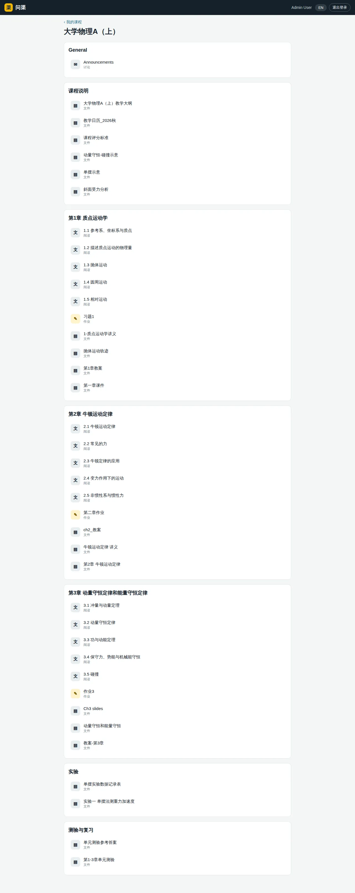
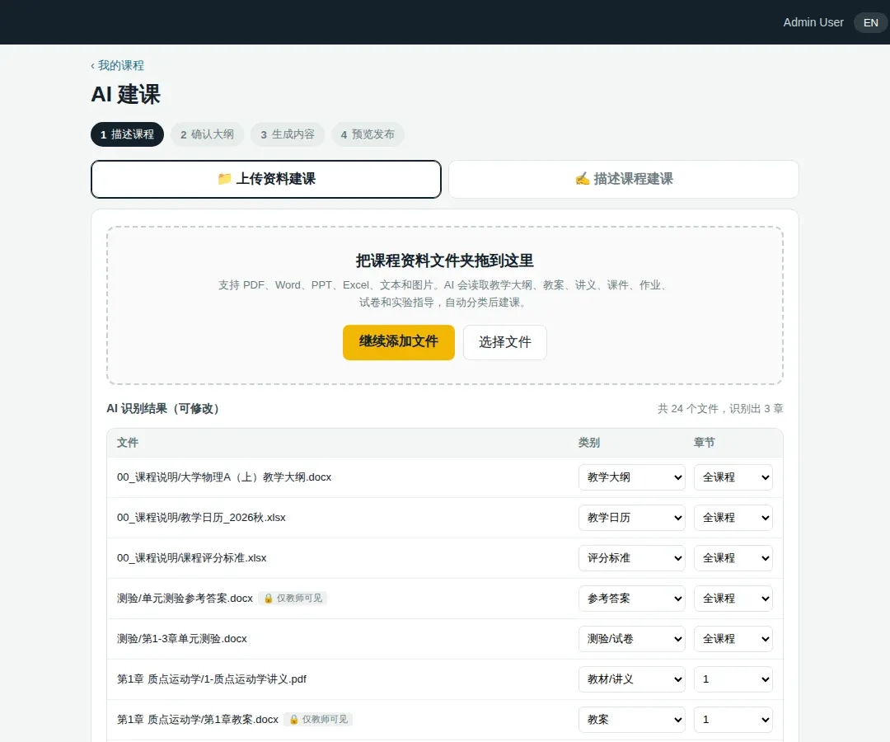
09AI 建课 · 有资料AI course building · with files 已上线Live
资料再乱，AI 来整理Messy files? The AI sorts them
10AI 建课 · 没有资料AI course building · from a brief
只说一句要求，一支 AI 教授团队开工Say one sentence, and an AI faculty team gets to work
例：“移动机器人运动学入门”——实测建出 4 章 8 课。课程负责人由 AI 内核担任，按《课程负责人守则》和老师对话：读资料再说话、有主见、老师拍板。Example: “Intro to mobile-robot kinematics” produced 4 chapters and 8 lessons. An AI course lead talks it through with the teacher: reads first, has opinions, and the teacher decides.
资料馆员Librarian
读资料、分类、识别章节Reads and sorts materials
课程设计师Course designer
课程设计书、大纲、教学日历Course design, syllabus, calendar
主讲教授Lecturer
逐课写中英讲义Bilingual notes, lesson by lesson
动画师Animator
Manim 动画，服务器渲染Manim animations, rendered on the server
实验师Lab engineer
虚拟实验，无头浏览器试做通过才交Virtual labs, test-run headlessly before delivery
插图师Illustrator
插图、图表，数字取自数字工厂Figures and charts, data from the factory
习题与测评Assessment
练习、答案、测验题库Exercises, answers, quiz banks
审稿人Reviewer
相似度、切题检查，每课一张审稿清单Similarity and relevance checks, one checklist per lesson
11每一课的成品Every lesson ships with
一课一套，十样齐全Ten deliverables, every lesson
中英讲义Bilingual notes
网页互动课件Interactive web slides
Manim 动画Manim animations
虚拟实验Virtual lab
插图Figures
实验指导书Lab guide
报告模板Report template
教案Lesson plan
练习与答案Exercises & answers
讲解视频（中英配音）Narrated video (zh/en)
之后还能改：只改一课的局部，就只重做受影响的成品；已发布的课做新版本，审核后替换；最多 30 份快照，随时撤销。Edits are surgical: change part of a lesson and only the affected pieces are redone; published lessons get a new version after review; up to 30 snapshots for undo.
12课程委员会Course committee 已上线Live
AI 先审，委员会拍板，每一步留痕AI reviews first, the committee decides, every step logged
质量不能只靠 AI。老师提交后，独立 AI 从六个方面打 ✓ / ✗ / ?，列出问题清单（严重程度、位置、改法）；任何委员可以退回，主任批准后才发布。审核期间课程锁定。Quality can't rest on AI alone. An independent AI marks six criteria ✓ / ✗ / ? and lists each issue with severity, location and fix; any member can return it, and only the chair's approval publishes it.
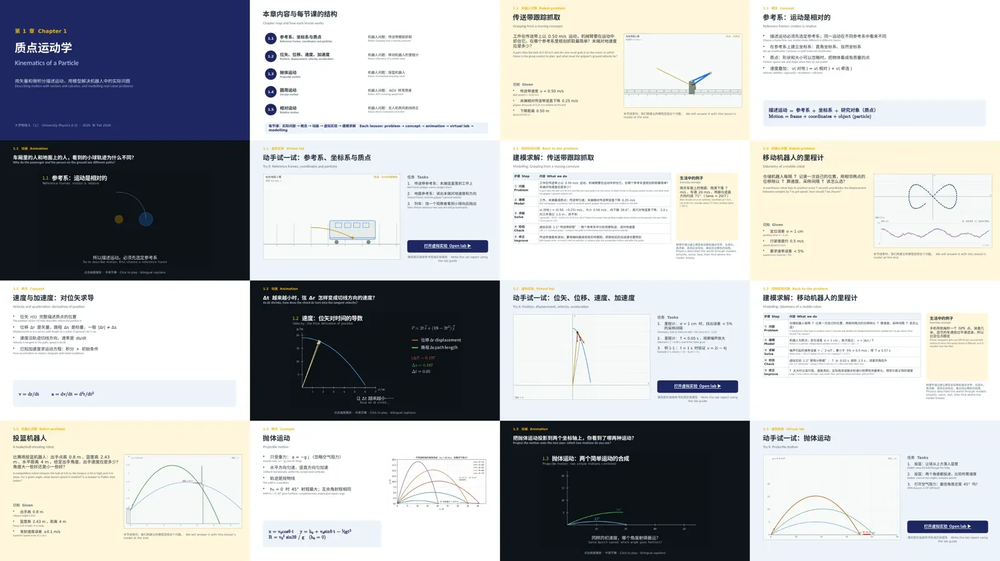
13网页互动课件Interactive web slides
课件里的动画和实验，能当场操作Animations and labs you can operate mid-lecture
- 像 PPT 一样翻页、逐条出现、讲者窗口、全屏。Turns pages like PowerPoint, with builds, presenter view and full screen.
- 动画、虚拟实验、三维模型嵌在页里，讲到哪里调到哪里。Animations, labs and 3D models live inside the slides.
- 中英对照。2026 年 10 月起，平台一律用网页互动课件取代 PPT。Bilingual. Since October 2026 the platform makes web slides only, no PowerPoint.
- 缝纫机课已做 29 讲网页课件。29 lectures of the sewing-machine course are already in this format.
14讲解视频Narrated lectures 已上线Live
每一课自动配上中英两种讲解Every lesson gets Chinese and English narration
语音合成和识别都在自己的服务器上用开源模型运行（Kokoro-82M、SenseVoice），不连外网。字幕可选中文、English、中英、关闭。老师也可上传自己的讲课录像，自动出中文字幕、英文翻译和英文配音。Speech synthesis and recognition run on our own server with open models (Kokoro-82M, SenseVoice), offline. Subtitles in Chinese, English, both or none. Teachers can also upload their own lecture video for automatic subtitles, translation and English voice-over.
15白板课Whiteboard lessons 已上线Live
像 VideoScribe 那样边讲边画，但由 AI 起稿Draw while you talk, like VideoScribe, drafted by AI
- 老师给题目或上传录音，AI 写分段讲稿、排画板；老师改哪一段，只重配哪一段。Give a topic or a recording; the AI writes the script and lays out the boards. Edit one part and only that part is re-voiced.
- 能插入问渠自己的虚拟实验、动画、数字工厂视频和三维视频，画的东西会动。Drop in WenQuest's own labs, animations, factory footage and 3D videos; drawings move.
- 输出网页版（可暂停、拖动、放大板书）和 MP4。Outputs a web version (pause, scrub, zoom) and MP4.
- 每日热点科普：已做 18 期，中英各一；有量化标准——每分钟 ≥ 90 个动作、≥ 16 张画板，不达标不交付。Daily science shorts: 18 episodes, zh and en; measured pace of ≥ 90 actions and ≥ 16 boards per minute, or it doesn't ship.
16三维仿真视频3D simulation video
一句话，要一段工程级三维仿真视频One sentence, one engineering-grade 3D video
动作由求解器算出（逆运动学、虚拟样机、MuJoCo），不是手调动画，所以读数可信。可以剖开、透视、慢放，带中英标注和读数。SolidWorks 负责设计和算，问渠负责讲出来、教出去。Motion comes from solvers (inverse kinematics, virtual prototypes, MuJoCo), not hand animation, so the readouts are real. Cut-aways, x-ray, slow motion, bilingual labels. SolidWorks designs it; WenQuest explains it.
17样片 · 自动播放Samples · playing
看得见机器里面发生了什么See inside the machine
一句话 → AI 写场景数据 → 6 张关键画面 → 小样 960×540 → 高清 1920×1080 → 素材库Sentence → AI writes scene data → 6 key frames → 960×540 preview → 1920×1080 HD → asset library
AI 只写数据、不写代码，程序先检查合法再渲染（Blender 4.2）。成片可直接插进白板课和课件。老师开课免费使用，企业申请开通。The AI writes data, never code; it is validated before rendering in Blender 4.2. Clips drop straight into lessons. Free for teaching; companies apply for access.
教材、动画与虚拟实验Textbooks, animation and virtual labs
每节课走同一条线：实际问题 → 概念 → 动画 → 虚拟实验 → 建模求解。实际问题以机器人为主，保留一个生活中的例子。Every lesson follows one line: a real problem → concepts → animation → virtual lab → modelling. Problems come mostly from robotics, plus one everyday example.
19自编教材Our textbooks
九本书，一套标准Nine books, one standard
| 教材Book | 规划章Planned ch. | 已写章 / 节Written ch. / sec. | 动画Anim. | 实验Labs | 算例Programs | 英文版English |
|---|---|---|---|---|---|---|
| 机器人学Robotics | 61 | 27 / 143 | 135 | 134 | 144 | 15 章15 ch. |
| 大学物理University Physics | 49 | 10 / 65 | 26 | 29 | 65 | — |
| 线性代数Linear Algebra | 42 | 15 / 106 | 24 | 30 | 109 | — |
| 微积分Calculus | 49 | 13 / 87 | 29 | 16 | 100 | — |
| 机械设计Mechanical Design | 52 | 7 / 62 | 11 | 9 | 49 | 7 章7 ch. |
| 机械制造技术Manufacturing Technology | 77 | 4 / 37 | 6+12 | 14 | 33 | — |
| 人工智能（含 CUDA）AI (with CUDA) | 36 | 18 / 140 | 24 | 23 | 136 | — |
| PLC 原理及实践PLC Principles | 48 | 5 / 36 | 5 | 6 | 40 | — |
| 数字集成电路设计Digital IC Design | 12 | 4 / 19 | 9 | 12 | 23 | 1 章1 ch. |
| 合计Total | 426 | 103 / 695 | 281 | 273 | 699 | 23 章23 ch. |
另有两本网页版教材：《缝纫机设计与制造》31 章（中英全文，43 个动画、实验和三维模型），《数字工厂实训》12 章（已写 3 章）。章的审定状态：初审 26 章、AI 审稿 62 章、草稿 15 章。Plus two web editions: Sewing Machine Design and Manufacturing (31 chapters, bilingual, 43 interactive pieces) and Digital Factory Practice (12 chapters, 3 written). Review status: 26 chapters editor-reviewed, 62 AI-reviewed, 15 drafts.
20课程标准The lesson standard
每一节，都是一条完整的学习链Every lesson is one complete chain
每节都有“来龙去脉”History in every section
谁、哪一年、为什么想到这个办法，附原始文献Who found it, when and why, with primary sources
每节都有“工程师笔记”Engineer's notes
工厂里真正会踩的坑The pitfalls you meet on a real shop floor
中英对照，术语统一Bilingual, consistent terms
5,878 条术语表，两本书同一术语的英文名必须一致5,878 glossary entries, enforced across books
00课程Courses
四个专业、四层课程，从物理基础到人形机器人Four programmes, four layers, from physics to humanoids
| 课程Course | 内容Content | 状态Status |
|---|---|---|
| 缝纫机设计与制造Sewing Machine Design & Manufacturing | 31 讲：机构、电控、样机、零件制造到数字工厂；网页课件、动画、实验、作业、测验、教案，期中 48 题、期末 50 题；公开课视频31 lectures from mechanisms and controls to prototypes, part making and the digital factory; slides, labs, homework, quizzes, exams, public video | 已上线 · 免费Live · free |
| 大学物理 A（上）University Physics A (I) | 由 43 个样例文件建成第 1–3 章 15 课；第 1 章 5 段双语动画、5 个机器人场景实验Chapters 1–3 (15 lessons) built from 43 files; chapter 1 has 5 bilingual animations and 5 robot-scenario labs | 第 1 章已上线Ch. 1 live |
| 数字工厂实训Digital Factory Practice | 12 讲；第 3、6、10 讲完整（课件、作业、测验、讲课视频）12 lectures; 3 complete with slides, homework, quizzes and video | 已做，待发布Built, pending |
| 专业课程体系Programme design | 机器人工程、电子信息与微电子、智能制造工程、计算机科学与技术 × 通识、基础、专业、特色四层；微电子 21 门课方案已定Robotics, electronics & microelectronics, smart manufacturing and computer science × general, foundation, major and specialty layers; 21 microelectronics courses designed | 方案已定，逐门建设Designed, being built |
九本自编教材就是这些课程的底座：老师选一本书、一个专业，AI 建课按同一套标准把它变成完整的课。The nine textbooks underpin these courses: pick a book and a programme, and AI course building turns it into a complete course to the same standard.
21质量关Quality gates
书里的每个数字，都由程序算出Every number in the books is computed
正文不手写结果，而是引用程序的输出；手写 4 位以上有效数字会被构建拦下。每次推送都自动构建全书，不通过不上线。The text cites program output instead of typing results; a hand-typed number with four or more significant digits fails the build. Every push rebuilds the whole book.
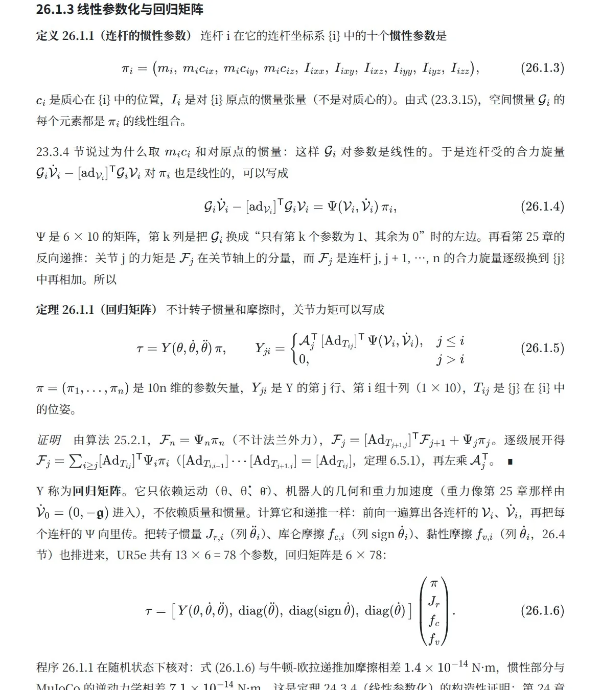
22动画Animation
281 段动画，讲静态图讲不了的281 animations for what a still picture can't show
- 269 段 Manim（3Blue1Brown 用的工具），12 段三维渲染（机械制造）。269 in Manim (the tool behind 3Blue1Brown), 12 rendered in 3D for manufacturing.
- 服务器自动渲染：1080p、30 帧，中英字幕，结尾一张公式卡。Rendered automatically on the server: 1080p, 30 fps, bilingual captions, a formula card at the end.
- 动画里的数值和教材算例是同一组数。The numbers in the animation are the same as in the worked example.
00动画墙 · 五本书里随手挑的六段Animation wall · six picked from five books
一段只讲一个概念，数字和书里的算例同一组One idea per clip, the same numbers as the worked example
23虚拟实验Virtual labs 已上线Live
打开网页就是实验室，手机也能做A lab in a web page, even on a phone
安全：一个网络请求都发不出Safe: not one network request
页面自带内容安全策略；AI 写的实验先过静态检查，16 种危险写法全部拒绝。Built-in content security policy; AI-written labs are statically checked and 16 unsafe patterns are refused.
可靠：交付前先自动试做Reliable: test-run before delivery
无头浏览器按“示范做法”把每个任务做一遍，报错、空白、做不到、偷偷联网都查得出。A headless browser performs every task; errors, blank screens, impossible tasks and hidden network calls are caught.
规范：报告按工程写法Rigorous: engineering reports
报告模板八栏正文、五步建模、AI 使用声明、评分量规。Templates with eight sections, five-step modelling, an AI-use statement and a rubric.
24现场演示 · 本页实时计算Live demo · computed in this page
会失败，才学得会：倒立摆调参Failure teaches: tune an inverted pendulum
RK4 积分、步长 2 ms、控制周期 10 ms。只控摆角时摆能立住，小车却冲出导轨；加上位置环，冲击后能恢复。平台上的实验还会采集指标、按量规给出评语。RK4, 2 ms step, 10 ms control period. With the angle loop alone the pole stays up but the cart runs off the rail; add the position loop and it recovers.
25物理仿真实验Physics labs
DeepMind 的 MuJoCo，在浏览器里逐位一致DeepMind's MuJoCo, bit-identical in the browser
用官方浏览器版 MuJoCo 3.14.0，自己托管、不连外网。UR5e、FR3 的模型取自 MuJoCo Menagerie，质量、惯量与原版逐位相同。The official MuJoCo 3.14.0 for the browser, self-hosted. UR5e and FR3 models come from MuJoCo Menagerie with identical mass properties.
26《机器人学》实验一览A few Robotics labs
每个实验都从一个机器人问题开始Every lab starts from a robot problem
27PLC 实验台PLC bench 已上线Live
写的 PLC 程序，让工厂跑满一个班Your PLC program runs a full shift
- 自研引擎：IEC 61131-3 结构化文本、梯形图（运行时能流绿色显示）、SFC，标准功能块。Own engine: IEC 61131-3 structured text, ladder (live power flow), SFC, standard blocks.
- 扫描周期、输入映像、看门狗、强制、时序图；可注入故障做自动化测试；PLCopen XML 导入导出。Scan cycle, image table, watchdog, forcing, timing charts; fault injection; PLCopen XML.
- OpenPLC 兼容：MatIEC 编译，经 Modbus 控制同一台虚拟设备。OpenPLC check: compiled with MatIEC, driving the same virtual machine over Modbus.
00PLC 实验台 · 三维虚拟设备PLC benches · 3D virtual machines
程序一按运行，三维设备就照着你的程序动Press Run and the 3D machine follows your program
28微电子Microelectronics
在浏览器里，从晶体管做到可流片的版图In the browser, from transistor to tape-out-ready layout
- 浏览器 SPICE（ngspice）与实验台模型最大偏差 0.01 mV。Browser SPICE (ngspice), within 0.01 mV of the lab's own models.
- 浏览器 Verilog：Yosys 综合 → 门级电路图；手机改为服务器综合。Browser Verilog: Yosys synthesis → gate-level schematic; phones use server synthesis.
- 开源工艺 SKY130：Xschem、Magic、KLayout、LibreLane 全套镜像；教材器件参数按 SKY130 校准，误差 ≤ 1%。Open SKY130 process with the full open toolchain; textbook device parameters calibrated within 1%.
一座真实运转的数字工厂A digital factory that really runs
问渠减速器厂：产品是 WQR-105 二级圆柱齿轮减速器，12 个工作单元、2 台 AGV、三坐标测量。教学模式下学生扮演计划员、工艺员、操作工、质检员、厂长；生产模式就是企业的日常工作台。The WenQuest reducer plant builds the WQR-105 two-stage reducer, with 12 work cells, 2 AGVs and a CMM. In teaching mode students play planner, process engineer, operator, inspector and plant manager; in production mode it is a company's daily workbench.
30架构Architecture
所有软件、设备和 AI，只走一条数据总线Every program, machine and AI talks over one bus
统一数据总线 MQTT，每条消息存进历史库。改一次设计，下游自动跟着变；车间只拿到批准过的版本。One MQTT bus; every message is stored. Change a design once and everything downstream follows; the shop floor only ever receives approved revisions.
01 · ORDER
接单，一屏看清工厂Order in, the plant at a glance
跟着减速器 WQR-105 的输出轴 SH-301，从接单走到交付之后。客户下单，或用参数配置器报价；首页一屏看清准时交付率、在制品、OEE、一次合格率，还有 AI 今日简报，每 5 秒刷新。Follow output shaft SH-301 of the WQR-105 from order to after-sales. A customer orders, or the configurator quotes; the home screen shows on-time delivery, WIP, OEE and first-pass yield plus an AI daily brief, refreshed every 5 s.
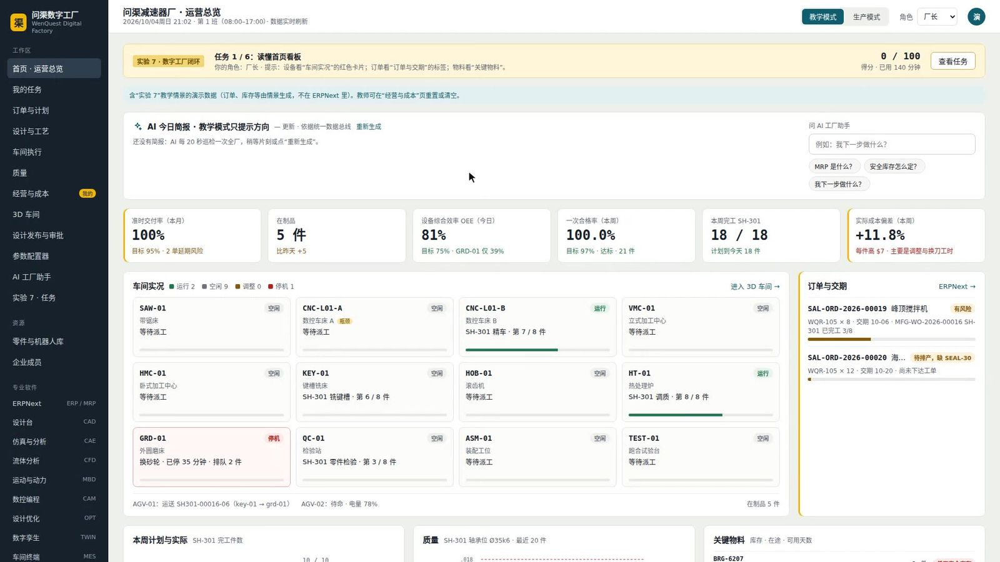
02 · DESIGN
改参数、校核、发布即生成图纸和 G 代码Change, check, release drawings and G-code
按轴段改直径、长度和键槽，系统按国标自动校核。批准后自动生成 STEP 模型、零件图和铣键槽 G 代码，ERPNext 物料版本加一、BOM 更新，新程序随工单派到车间，全程留痕。也接 FreeCAD、SolidWorks 宏和任何 CAD 导出的 STEP。Edit each step's diameter, length and keyway; standards are checked automatically. On approval the STEP model, drawing and keyway G-code are generated, the ERPNext item revision and BOM update, and the new program goes to the shop with the work order. FreeCAD, SolidWorks and any STEP file plug in too.
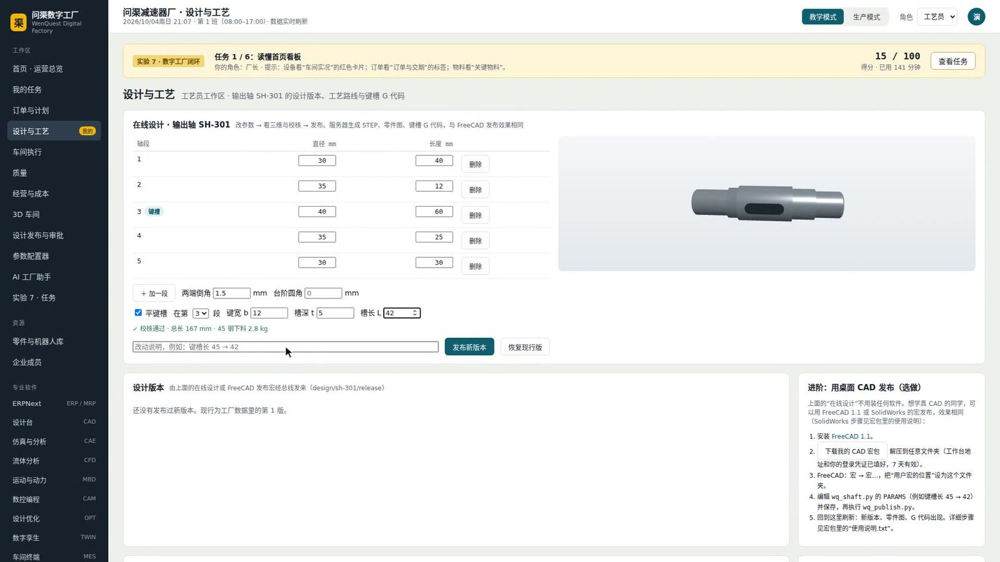
03 · SIMULATE
一句话设置，AI 解释结果Set it up in a sentence, the AI explains it
Gmsh 网格 + CalculiX 求解：应力、变形、安全系数云图和 Word 报告；疲劳用博世开源的 pyLife，载荷谱可以直接用仿真车间里真实的转矩记录。图中是尖角设计的 SH-301 在 350 N·m 下的结果：最大应力 267.3 MPa、安全系数 1.33，界面直接提示加圆角。Gmsh + CalculiX: stress, deflection, safety-factor maps and a Word report; fatigue with Bosch's open-source pyLife, using real torque records from the virtual shop. Shown: SH-301 with a sharp corner at 350 N·m — 267.3 MPa peak, safety factor 1.33, and a prompt to add a fillet.
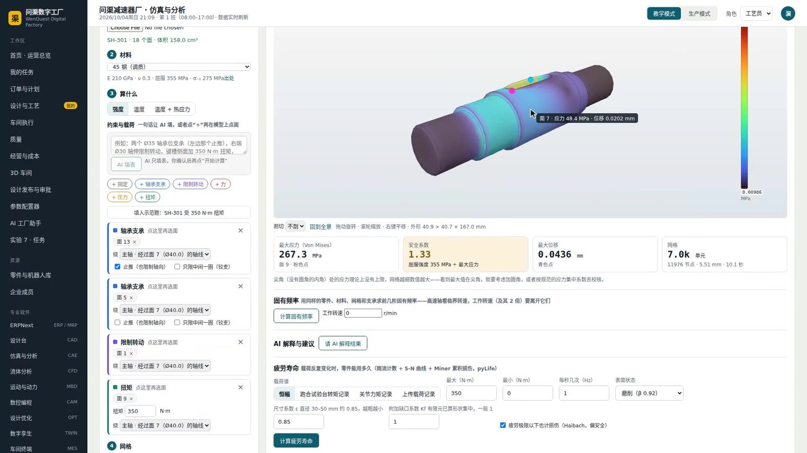
04 · PLAN
先算料，人确认后再写入 ERPPlan materials, confirm, then write to ERP
净需求 = 毛需求 + 占用 + 安全库存 − 库存 − 在途。系统生成工单和请购提议，人确认后才经桥接写进 ERPNext，再下达车间。AI 只提议，不越权。Net need = gross + allocated + safety stock − on hand − on order. The system proposes work orders and purchase requests; nothing reaches ERPNext until a person confirms. The AI proposes, never overreaches.
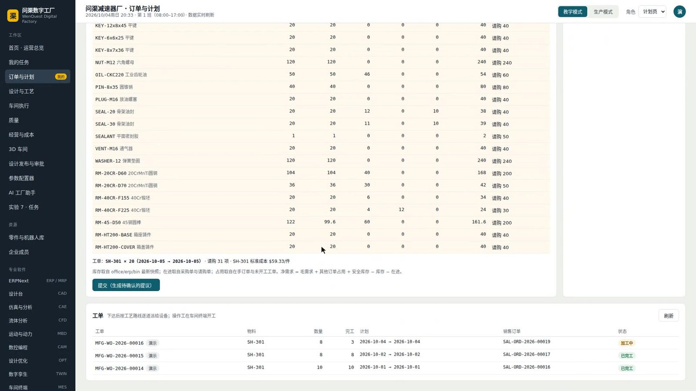
05 · MAKE
车间开工，数据实时推送The shop runs, data streams live
工单按工序派到 12 个工作单元。车间终端派工、报工、换刀、停机、复位；主轴转速、刀具寿命、最近事件经 MQTT 实时推送，三维车间同步显示。Work orders go to 12 work cells. Terminals dispatch, report, change tools, stop and reset; spindle speed, tool life and events stream live over MQTT, mirrored in the 3D shop.
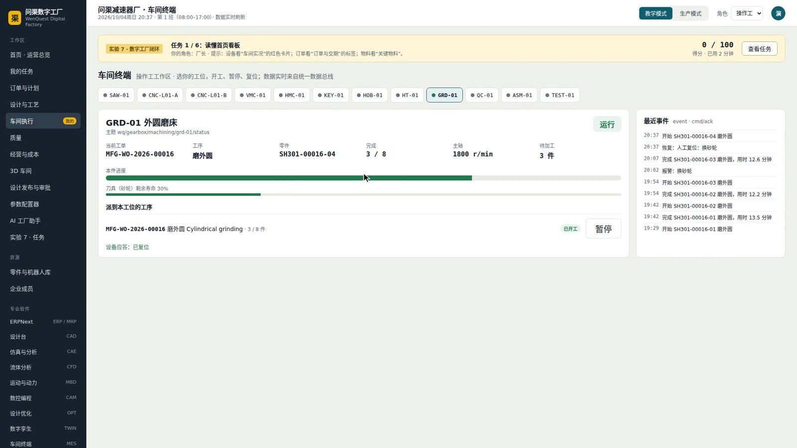
06 · QUALITY
控制图、不合格品、8DControl charts, NCRs, 8D
控制图盯住轴承位 Ø35 k6 等 6 个关键特性；超差自动开不合格品单，严重问题走 8D。教学模式下，老师可以埋一个隐藏问题让学生去找。Charts watch six key features such as the Ø35 k6 bearing seat; out-of-tolerance parts open an NCR automatically, serious ones go to 8D. In teaching mode the instructor can plant a hidden fault.
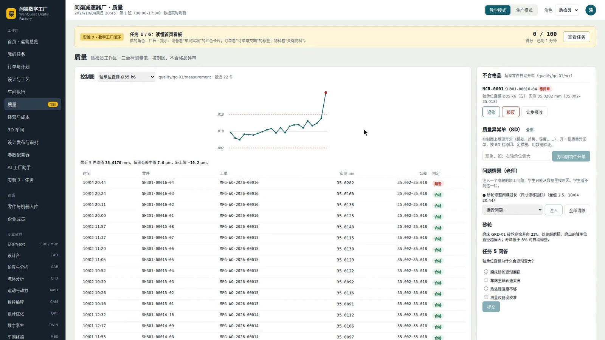
07 · SERVICE
卖出去的每一台，都有一个数字分身Every unit sold has a digital twin
出厂数据 + 现场数据 + 寿命模型（轴承 L10、轴疲劳、热平衡、润滑油）→ 健康度、剩余寿命、报警和“假如”分析；振动按 ISO 10816-1 分区；一键开维修单进 ERPNext。Factory data + field data + life models (bearing L10, shaft fatigue, heat balance, oil) → health, remaining life, alarms and what-ifs; vibration zoned per ISO 10816-1; one click opens a service order in ERPNext.
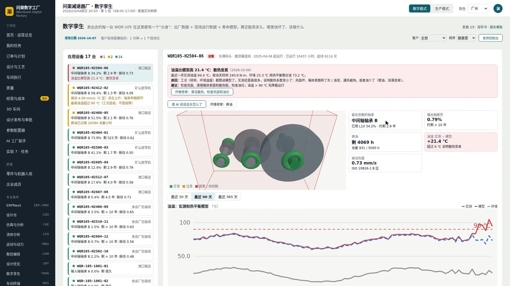
38仿真与制造Simulation and manufacturing
不装软件，浏览器里做全套仿真No installs. The full simulation suite in a browser
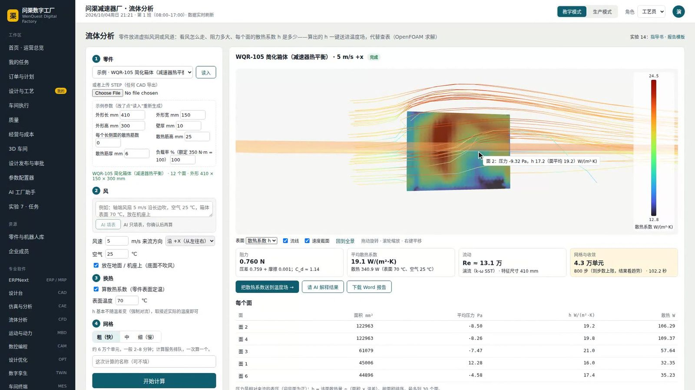
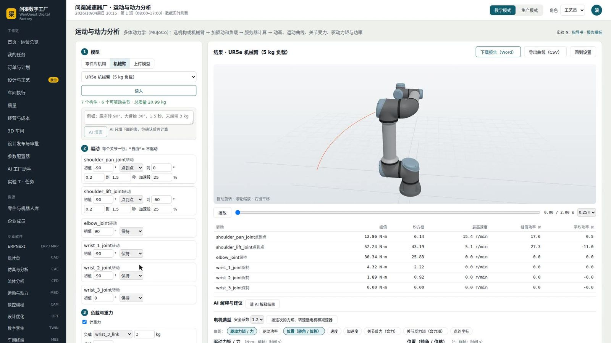
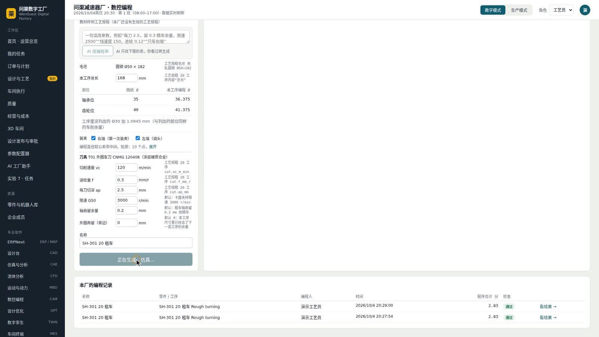
39厂情中枢 · 对标 PalantirFactory hub · Palantir-class 已上线Live
看见问题、追到原因、推演方案、人批准再执行Spot it, trace it, simulate options, act on approval
提醒和日报周报可推送到企业微信、钉钉、飞书群机器人和邮件。没接大模型时，规则版照样能用。Alerts and reports go to WeCom, DingTalk, Feishu or email. Without a model, the rule-based version still works.
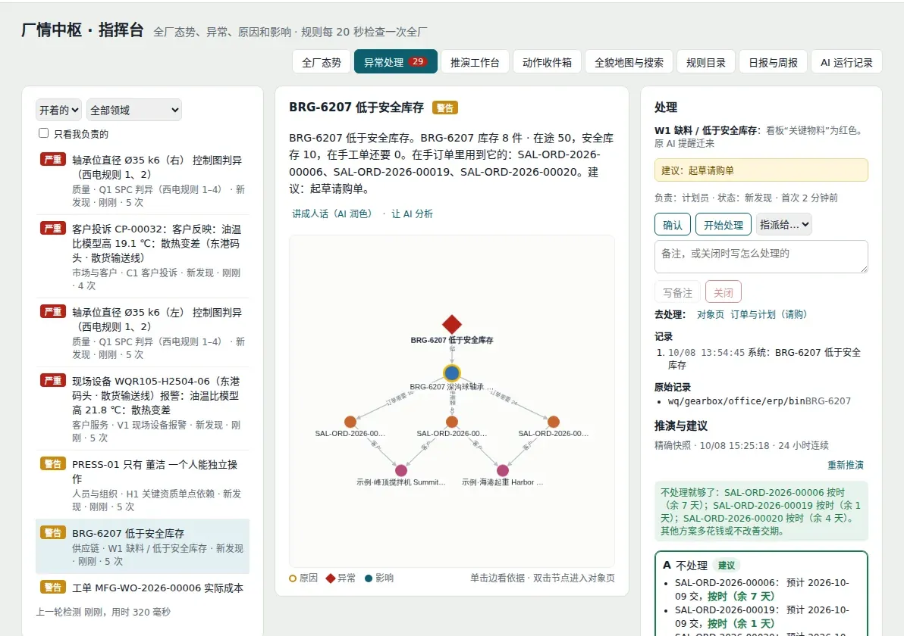
40示意动画 · 本页实时运行Illustration · running live
磨床停机之后：追因、推演、建议After the grinder stops: trace, simulate, recommend
零件流经 8 个工作中心；圆点是排队的零件，橙色是停机。磨床停下后积压、订单延期风险上升；中枢提议“换砂轮 + 重排工单”，计划员确认后执行。Parts flow through 8 work centres; dots are queued parts, orange means down. The grinder stops, the queue builds, the order is at risk; the hub proposes a wheel change and reschedule, and the planner approves.
41数字主线 · 教学情景Digital thread · teaching scenario
一个客户电话，追到一片砂轮One customer call, traced to one grinding wheel
推荐方案 B：比 C 少通知一家客户、少花 $480，也不漏掉高风险的那台。Recommended option B notifies one fewer customer and costs $480 less than C, without missing the high-risk unit.
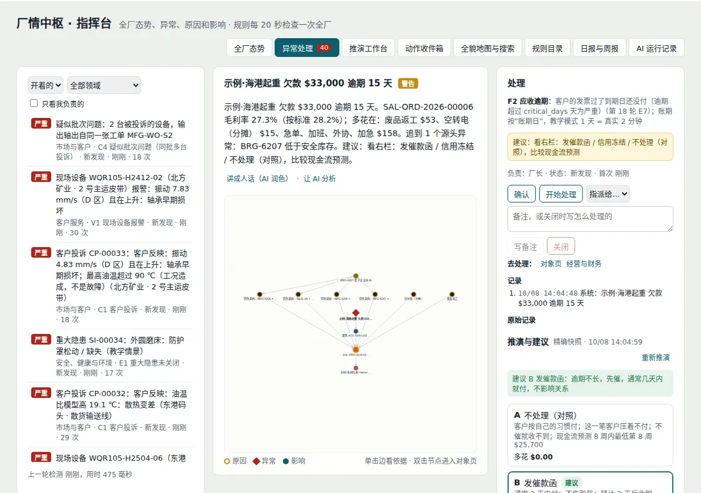
42领域包Domain packs 已上线Live
不止生产：一座工厂的七个侧面Beyond production: seven sides of a plant
客户与服务Customers & service
投诉、追溯、召回Complaints, traceability, recalls
安全环保Safety & environment
挂牌上锁、隐患随手拍Lockout-tagout, hazard snapshots
设备维护与资产Maintenance & assets
维护策略、备件Strategies, spares
人员与排班People & shifts
技能矩阵、缺人应对Skills matrix, absences
供应链Supply chain
来料检验、供应商选择Incoming inspection, supplier choice
能源与环境Energy
空转、错峰、单件碳足迹Idling, peak shifting, carbon per part
经营与财务Business & finance
订单毛利、应收、现金Order margin, receivables, cash
每个领域都配实验A lab for each
实验 15–23：追因、召回、隐患、维护、排班、来料、碳足迹、毛利Labs 15–23 cover each domain
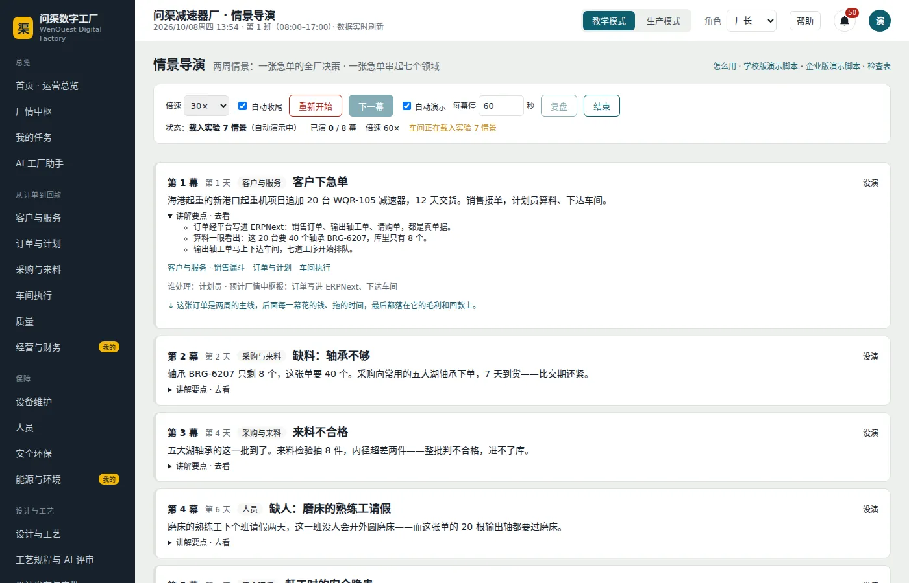
43情景教学Scenario teaching
一张急单，八幕戏演完一座工厂One rush order, eight acts, the whole plant
- ① 客户下急单 ② 缺料 ③ 来料不合格 ④ 缺人① Rush order ② Shortage ③ Bad incoming lot ④ Short-staffed
- ⑤ 赶工时的安全隐患 ⑥ 设备劣化 ⑦ 空转与峰时 ⑧ 交付开票，应收逾期⑤ Safety hazard under pressure ⑥ Machine wear ⑦ Idling and peak power ⑧ Invoiced, payment late
最后自动复盘。老师可以快进、自动演示；手机上也能当导演。每次部署前，系统都在真 ERPNext 上把八幕走一遍才放行。It ends with an automatic debrief. Teachers can fast-forward or auto-play, even from a phone. Every deployment first plays all eight acts against a real ERPNext.
44典型应用Case studies
从空库开始，10 分钟跑完 34 步From an empty database, 34 steps in about 10 minutes
“设计院 → 工厂”全流程：选型、计算、建模、仿真、工艺、BOM、进 ERP、排产、加工、检验。数据不够就停下来写明缺什么，不估一个数凑结论。The full “design office → factory” flow: selection, calculation, modelling, simulation, process plan, BOM, ERP, scheduling, machining, inspection. Missing data stops the run with a note, rather than a guessed number.
协作机器人关节Cobot joint
电机、谐波减速器、编码器、刹车；谐波减速器缺输入侧惯量时，惯量比判“待确认”Motor, harmonic drive, encoder, brake; a missing inertia value yields “to be confirmed”
SCARA
四轴水平关节机器人从选型到装配A four-axis SCARA from selection to assembly
直驱平缝机Direct-drive lockstitch machine
机构、电控、零件制造进同一座工厂Mechanism, controls and parts in one plant
45零件与机器人库Parts and robot library 已上线Live
课程、工厂、实验、视频，共用一个零件库Courses, factory, labs and video share one library
按名称、标准号、规格或 ERP 物料号检索（6207、GB/T 1096、M8x25、UR5e）；ERPNext 物料页直接链到零件库。Search by name, standard, size or ERP item; ERPNext item pages link straight to it.
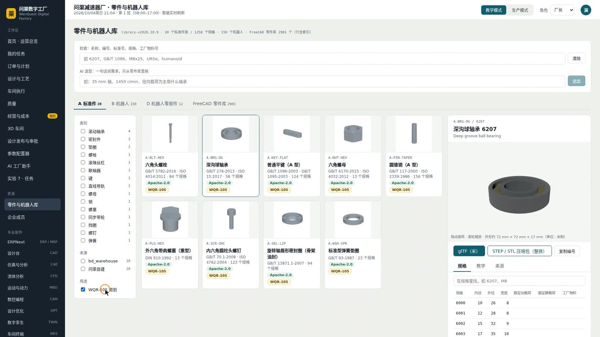
46部署方式Deployment
一个班一座工厂，一家企业一座工厂A plant per class, a plant per company
班级工厂Class plants
每个班一座独立工厂，加一行配置、推送即建好One independent plant per class, built from one config line
企业演示工厂Company demo plant
生产模式，自己的 ERPNext，与教学工厂完全分开Production mode with its own ERPNext, fully separate
份工厂清单plant manifest
一份 plant.yaml（可从 Excel 导入）描述一座工厂，新厂不改代码One plant.yaml (Excel import) describes a plant; no code changes
本地版On-premise
一条命令在机房起整座工厂，U 盘导入镜像，可完全断网One command starts the whole plant in a lab, from a USB stick, fully offline
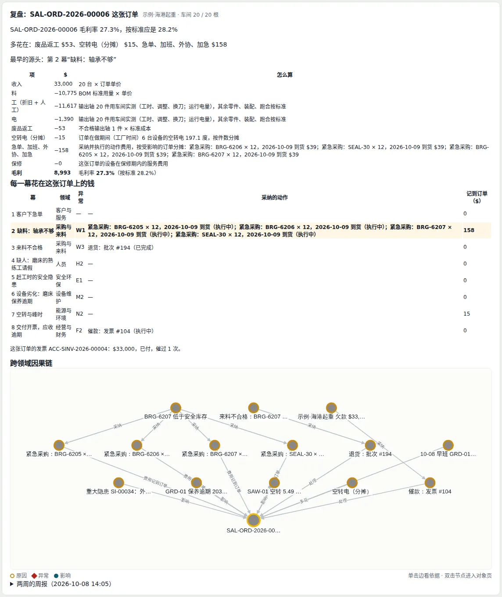
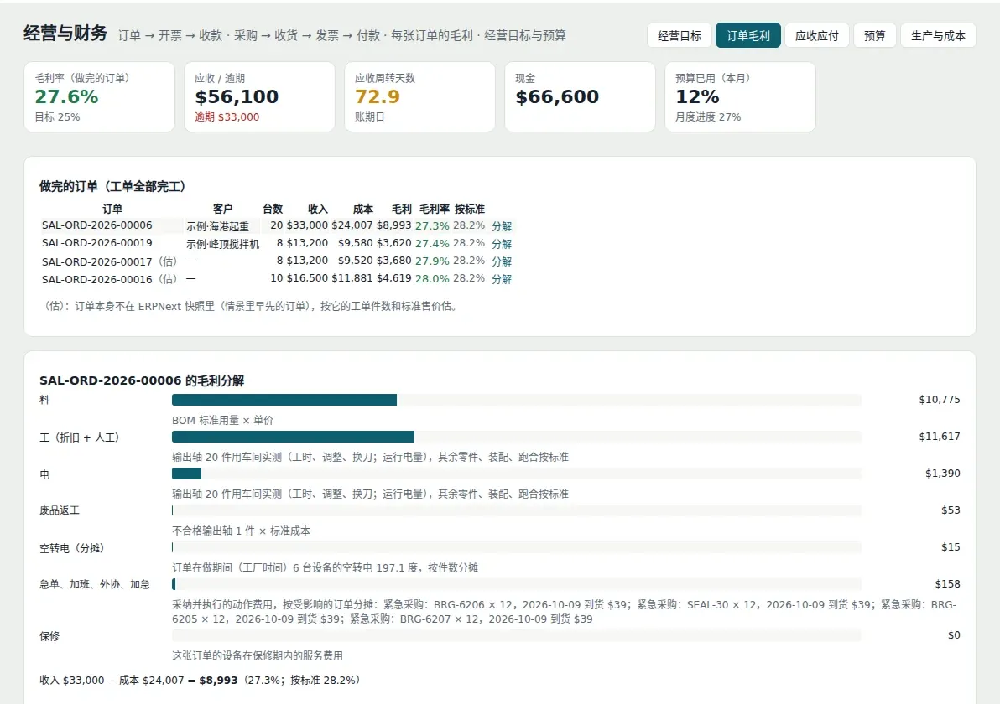
把老师傅的经验，
做成软件Turning veterans' know-how
into software
通用 CAD 能画出零件，但不管它在 5000 r/min 下会不会跳、会不会磨坏。行业专用软件从工作要求出发，校核全做，结果写进计算书，加工误差能拿回来算补偿。General CAD can draw the part but won't tell you whether it jumps or wears out at 5000 r/min. Industry software starts from the duty, runs every check, writes the calculation report, and feeds measured errors back into compensation.
48缝纫机设计与制造软件Sewing-machine design software 已上线Live
改一个参数，58 项校核当场亮红绿灯Change one parameter, 58 checks light up at once
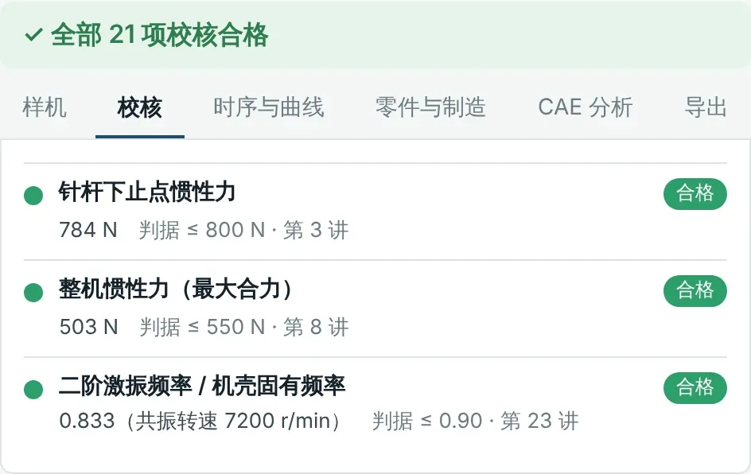
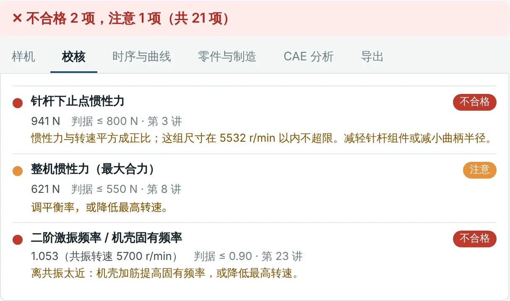
5 种机型：平缝机（21 项）、包缝机（11）、绷缝机（7）、电子花样机（14）、多头刺绣机（5）。每项写数值、判据、出自教材第几讲；不合格时给出改法。Five machine types: lockstitch (21 checks), overlock (11), coverstitch (7), electronic pattern (14), multi-head embroidery (5). Each shows the value, the criterion and the lecture it comes from.
49出件Outputs
算完直接出计算书、三维模型和调机卡Straight to reports, 3D models and set-up cards
- 设计计算书、调机卡（Word），参数表与运动曲线（Excel）。Design calculation report and set-up card (Word); parameter tables and motion curves (Excel).
- STEP 三维模型：平缝机 16 个零件、包缝机 23 个；FreeCAD 宏、DXF 平板零件。STEP models: 16 parts for lockstitch, 23 for overlock; FreeCAD macro and DXF flats.
- 花样机出每针转速与用时表、X/Y 轴电机表；刺绣机出针长、转速、头数与效率表。Pattern machines get per-stitch speed and X/Y motor tables; embroidery gets needle stroke, speed and head-count tables.
- FreeCAD 工作台与网页版同一个计算核心：导入参数后 21 项校核的结论和数值完全相同。FreeCAD workbench on the same core: all 21 checks give identical results.
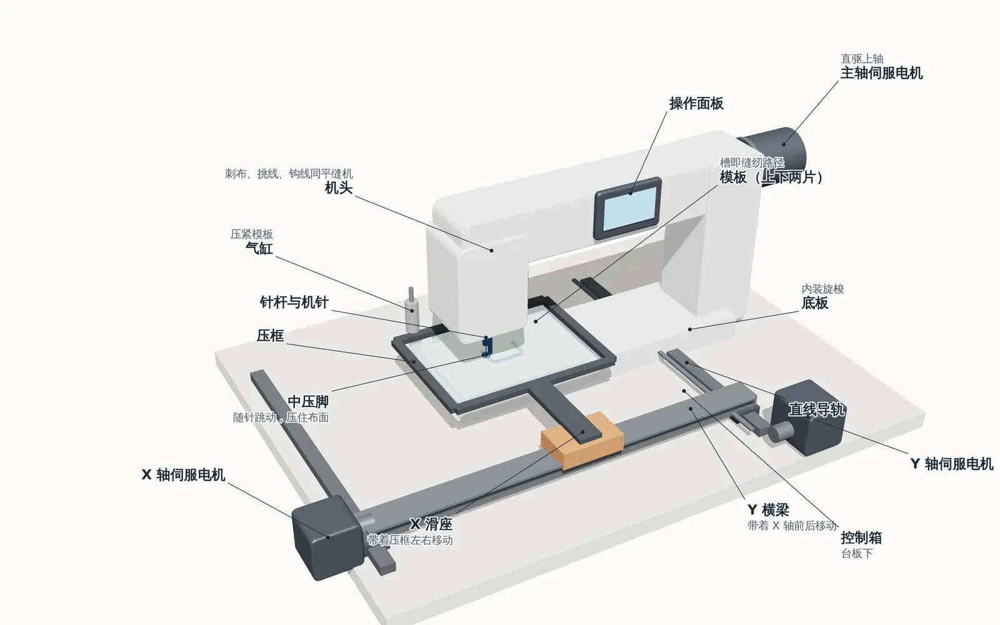
00《缝纫机设计与制造》虚拟实验Sewing Machine Design & Manufacturing · virtual labs
机构在转，读数跟着变：老师傅的手感变成看得见的数The mechanism turns and the readings follow: a veteran's feel made visible
50接入问渠 CAEPlugged into WenQuest CAE
减重一定要复核，软件会直接说不合格Lightweighting gets re-checked, and the software says no
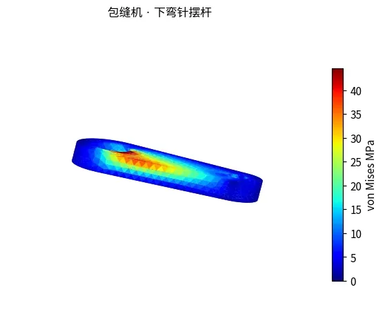
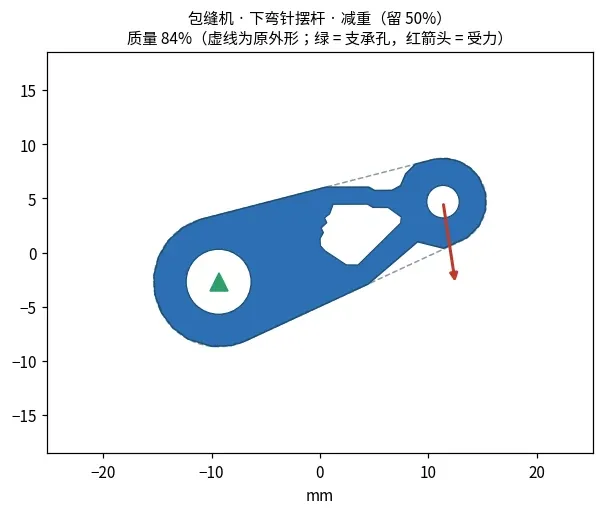
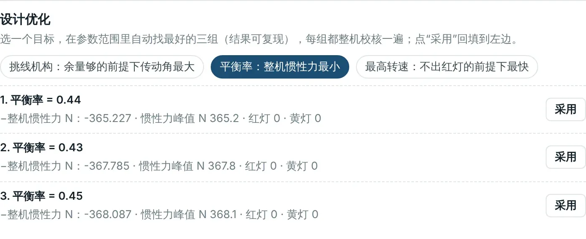
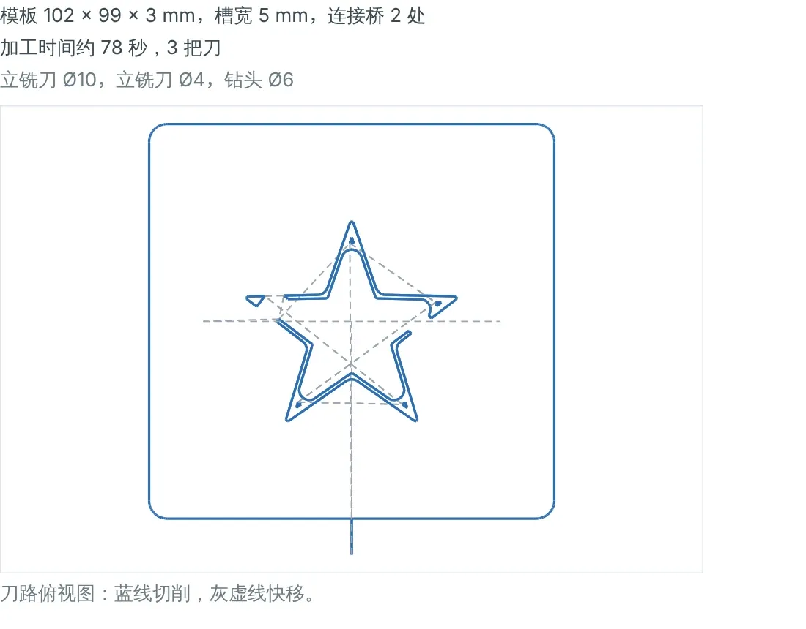
51问渠凸轮WenQuest Cam 已上线Live
从运动要求，一条线做到加工和补偿From motion requirement to machining and compensation
- 8 种运动规律，盘形凸轮（直动/摆动，滚子/平底/尖顶）、槽凸轮、弧面分度凸轮。8 motion laws; disc cams (translating/oscillating; roller/flat/knife), groove cams, globoidal indexing cams.
- 压力角、根切、曲率、赫兹接触应力、高速跳离转速、驱动力矩。Pressure angle, undercut, curvature, Hertz stress, jump speed, drive torque.
- 一根轴上多个凸轮：时序图、联锁、电机转矩、停歇段残余振动。Multi-cam shafts: timing, interlocks, motor torque, residual vibration.
- AI 起草：一句话出运动程序草稿，句子里没有的数会被清空，不补不猜，点“采用”才替换。AI drafting: a sentence becomes a motion program; numbers not in the sentence are cleared, never guessed.
52测量与补偿Measure and compensate
把加工误差拿回来，算出补偿再磨一遍Bring the measured error back, grind it out
出磨床 X–C 程序、铣削程序、慢走丝 DXF、STEP（B 样条偏差 0.007–0.013 µm）。Outputs grinder X–C programs, milling programs, wire-EDM DXF and STEP (B-spline deviation 0.007–0.013 µm).
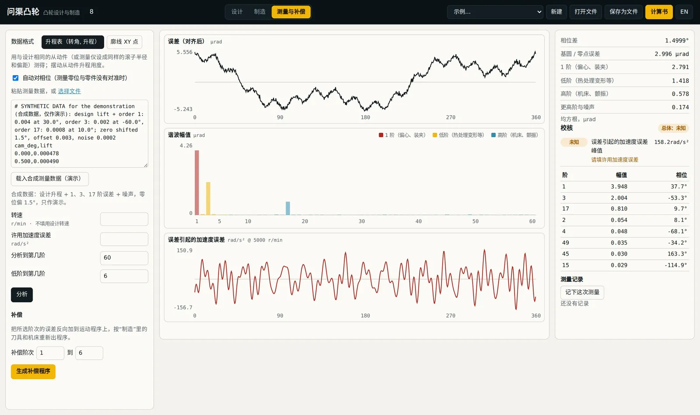
AI 原生，
但结果可以复核AI-native,
yet every result checks out
AI 负责设置和解释，计算交给成熟的求解器；每次改动都自动测试；数据和模型守规矩。The AI sets up and explains; proven solvers compute; every change is tested; data and models follow the rules.
54求解器Solvers
AI 不算力学：计算交给工业界验证过的求解器The AI doesn't do the mechanics: proven solvers do
CalculiX · Gmsh
应力、模态、热、疲劳（pyLife）Stress, modal, thermal, fatigue (pyLife)
OpenFOAM
四道标准题核对Checked on four benchmarks
MuJoCo 3.14
网页版与 Python 版逐位一致Browser and Python bit-identical
ERPNext v16
物料、BOM、工单、质检、财务Items, BOMs, work orders, QC, finance
build123d · FreeCAD
STEP、零件图、工作台STEP, drawings, workbenches
Blender · Manim
三维视频、教学动画3D video, teaching animation
ngspice · Yosys · SKY130
电路、综合、版图Circuits, synthesis, layout
Optuna · SIMP
参数优化、拓扑优化Parameter and topology optimization
GPL 软件作为服务器上的独立程序调用、以在线服务方式提供，不分发软件本身；不用 AGPL 软件做核心。GPL tools run as separate server programs offered as a service, never redistributed; no AGPL software in the core.
55工程纪律Engineering discipline
推送即上线，所以每次都要全检Push means production, so everything is checked
推送到主分支后自动测试 → 构建网页版、小程序版和 7 个平台镜像 → 部署 → 部署后检查。每周自动重建一次，拿到 Moodle 安全更新。A push to main runs tests → builds web, mini-program and 7 platform images → deploys → verifies. A weekly rebuild picks up Moodle security updates.
| 部分Part | 测试项Tests |
|---|---|
| 数字工厂Digital factory | 587 |
| 学习平台网关Platform gateway | 291 |
| 零件库Parts library | 165 |
| 凸轮计算内核Cam kernel | 101 |
| 教材构建工具、实验、动画、语音等Book tools, labs, animation, voice… | 95 |
| PLC 引擎、前端、Moodle 插件PLC engine, front end, Moodle plugin | 46 |
| 合计Total | ~1,285 |
56合规Compliance
国内部署只用已备案模型，数据不出平台In China, only registered models; data stays on the platform
一个开关切地区One region switch
国内只用 DeepSeek，出错也不换境外模型；Claude 只用于美国。备份可选阿里云 OSS、腾讯云 COS。China uses DeepSeek only, with no fallback abroad; Claude is US-only. Backups to Alibaba OSS or Tencent COS.
零外部请求Zero external requests
字体、three.js、KaTeX、MuJoCo 全部放本站；CI 检查页面里不许出现公共 CDN。Fonts, three.js, KaTeX and MuJoCo are self-hosted; CI fails any page that calls a public CDN.
关键服务本地运行Key services run locally
语音合成与识别、动画渲染、实验检查都在自己的服务器上，不经第三方。Speech, animation rendering and lab checking run on our own servers.
国内正式上线（ICP 备案、国内服务器、小程序备案）按《国内部署指南》推进，属于下一步工作。Formal launch in China (ICP filing, local servers, mini-program filing) follows the China deployment guide and is the next step.
57双语Bilingual
中文、English，一键切换Chinese and English, one click
中国的学校、美国的学校、走出去的企业，用的是同一套内容。Chinese schools, American schools and exporting companies all use the same content.
- 平台：界面、课程名称、正文按用户语言显示Platform: UI, course names and content follow the user
- 教材：23 章英文全文，5,878 条中英术语Books: 23 chapters in English, 5,878 bilingual terms
- 动画、课件、讲解视频：中英字幕、中英配音，可从同一时刻切换Animation, slides, video: bilingual captions and voice, switchable mid-play
- 软件：官网、凸轮、缝纫机软件、数字工厂帮助都有中英文Software: website, Cam, sewing software and factory help in both languages
给学校、给企业、给老师For schools, companies and teachers
每个模块都能单独用，也能任意组合、整套上，或者为你定制。Use any module on its own, combine them, take the whole platform, or have it tailored.
59学校Schools
合作学校首年免费Partner schools: first year free
- 老师负担交给 AI：有资料、没资料，都能建出完整的课（内容、课件、视频、作业、测验、考试）。The AI carries the teacher's load: complete courses with or without materials.
- 学生在会运转的数字工厂里扮演岗位，每班一座工厂，老师看得到每个人做了什么。Students take real roles in a working factory, one per class, with every action visible.
- 可申报“人工智能 + 高等教育”应用场景典型案例、虚拟仿真实验教学一流课程、教改项目。Supports applications for AI-in-education showcases, first-class virtual-lab courses and teaching-reform projects.
- 试点方式：一个学院、3–5 门课、一个学期。Pilot: one school, 3–5 courses, one term.
60企业Companies
不换你的 CAD，把它和 ERP、车间接起来Keep your CAD. Connect it to ERP and the shop
- 数字工厂企业版：设计、计算、仿真、ERP/MES、厂情中枢，按模块订阅，计算按时长。Digital factory, enterprise: design, calculation, simulation, ERP/MES and the hub, by module, compute by time.
- 行业专用软件：缝纫机设计软件来宾可免费试算，企业开通后保存、导出、下载工作台、接 CAE；凸轮教学版免费，企业版含加工程序、误差补偿和 FreeCAD 工作台。Industry software: try the sewing software free; enterprise accounts save, export and use CAE. Cam is free for teaching; enterprise adds machining, compensation and FreeCAD.
- 为你定制：把你们的设计计算、校核和工艺经验做成软件——凸轮和缝纫机就是样板。Built for you: your design rules and process know-how as software, as we did for cams and sewing machines.
- 员工培训：用同一套课程和工厂。Staff training on the same courses and factory.
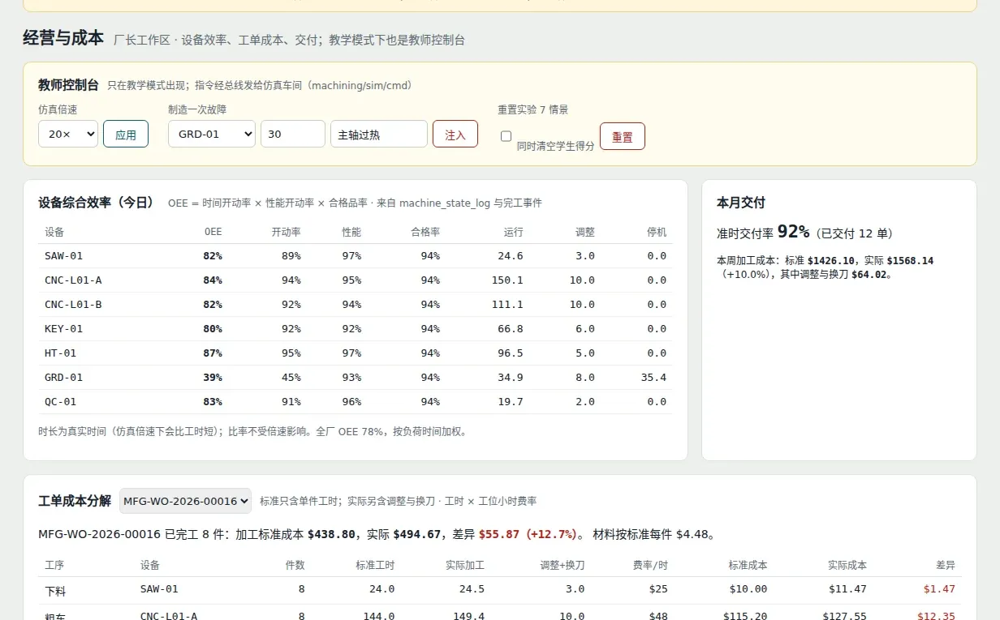
61老师与个人学员Teachers and learners
老师入驻开课，课程收入的 40% 归老师Teach here and keep 40% of course revenue
入驻老师Instructors
AI 建课工具、虚拟实验、数字工厂免费使用；也欢迎审阅一章教材，署名致谢。AI tools, labs and the factory are free to use; reviewers of a chapter are credited by name.
每学分（个人学员）per credit (individuals)
年度封顶 $600，不自动续费；每门收费课前 2 讲免费试听，14 天无理由退款。Capped at $600 a year, no auto-renewal; first 2 lectures free, 14-day refund.
公开内容Open content
注册、在线读教材、浏览器实验、公开课视频免费；缝纫机课和每个专业第一门基础课免费。Sign-up, online books, browser labs and public lectures are free; so are the sewing course and each major's first foundation course.
首期小班由创始人张国庆亲自授课，项目驱动。在线付款尚未开通，现阶段报名请来信。The first small cohort is taught by founder Guoqing (Eddie) Zhang, project-driven. Online payment is not open yet; please write to enrol.
62路线图 · 以下均为计划或待上线Roadmap · planned or pending
接下来要做的，也写在明处What comes next, stated plainly
数字工厂实训课程包、缝纫机第 4–15 讲公开视频、微信小程序Digital-factory course pack, sewing lectures 4–15, WeChat mini-program
机器人厂：数字工业园第二座厂A robot plant: the second factory in the park
横机：缝纫机软件的第六种机型；圆柱凸轮Flat knitting machines; cylindrical cams
云端 GPU 实验真机实测（《人工智能》第 4–9 章）Cloud-GPU labs measured on real hardware (AI ch. 4–9)
国内正式部署、在线支付、对接学校教务系统China launch, online payment, school SIS integration
课程 AI 助教、学情分析与学业预警Course AI tutor, learning analytics and early warning
Model it · Simulate it · Build it
先在仿真里学懂，
再到真机上做成。Understand it in simulation.
Build it for real.
欢迎学校试点、企业合作开发与案例共建、老师入驻开课。We welcome school pilots, joint development and case studies with companies, and teachers who want to teach here.
wenquestrobotics.com
learn.wenquestrobotics.com
factory.wenquestrobotics.com